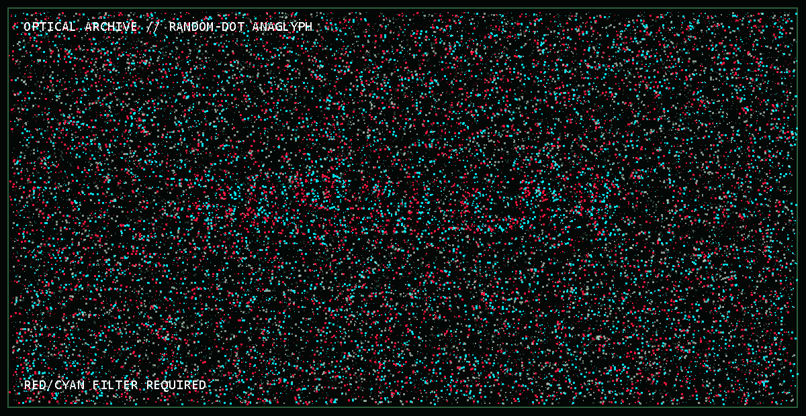

Frammento 07 — Separazione ottica
Two eyes required
Il nodo ha distribuito la chiave su due canali cromatici. Gli occhiali rosso/ciano sono la via originale; le lenti digitali sono il protocollo di accessibilità.
NivaZGameS e UglyGames osservano lo stesso lavoro da due prospettive: una cerca solidità e costruzione, l’altra caos, ironia e libertà. La profondità appare soltanto quando le due immagini convivono.

DIFFUSO50%SELETTIVO